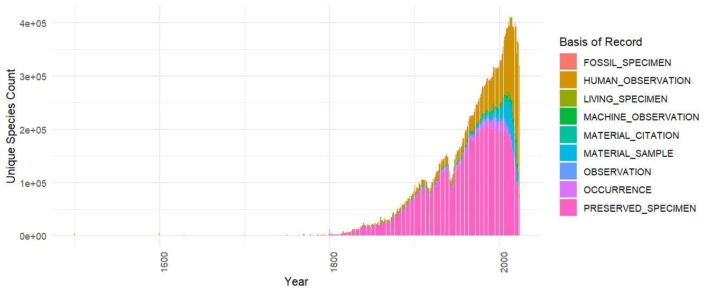

GBIF SQL Downloads
John Waller
2024-09-25
Source:vignettes/gbif_sql_downloads.Rmd
gbif_sql_downloads.RmdThis is an experimental feature, and the implementation may change throughout 2024. The feature is currently only available for preview by invited users. Contact helpdesk@gbif.org to request access. https://techdocs.gbif.org/en/data-use/api-sql-downloads
If your download can be formulated using the traditional predicate downloads, it is usually going to be much faster to use
occ_download(). See article Getting Occurrence Counts From GBIF.
The experimental Occurrence SQL Download API allows users to query GBIF occurrences using SQL. In contrast to the Predicate Download API, the SQL API allows selection of the columns of interest and generation of summary views of GBIF data.
SQL downloads, like regular downloads, required you to set up your GBIF credentials. I suggest that you follow this short tutorial before continuing. For the time being, SQL downloads are only available for preview by invited users. Contact helpdesk@gbif.org to request access.
# test if your download is set up correctly
# occ_download_sql_prep("SELECT datasetKey, countryCode, COUNT(*) FROM occurrence WHERE continent = 'EUROPE' GROUP BY datasetKey, countryCode")
occ_download_sql("SELECT datasetKey, countryCode, COUNT(*) FROM occurrence WHERE continent = 'EUROPE' GROUP BY datasetKey, countryCode")occ_download_get() and
occ_download_import() still work with SQL downloads.
occ_download_get("0000967-240425142415019") %>%
occ_download_import()Supported SQL
Only SELECT queries are supported, and only queries
against a single table named occurrence. JOIN
queries and sub-queries are not allowed. Selecting * is
also not allowed. One must explicitly select the columns needed.
GROUP BY queries are supported, as are basic SQL window
functions (OVER and PARTITION BY).
ORDER BY is supported.
Most common SQL operators and functions are supported, such as
AND, OR, NOT,
IS NULL, RAND(), ROUND(…),
LOWER(…), etc. Case is ignored by the GBIF SQL parser, and
all column names are returned as lowercase.
You can use occ_download_sql_prep() to check if your
query is valid.
occ_download_sql_prep("SELECT * FROM occurrence WHERE year = 2000")
# Should return an ERROR since "*" is not allowedIf you need all occurrence columns, you can use the
regular download
interface occ_download(pred("year", "2000")) instead of
the SQL interface.
Note that if you doing
GROUP BYCOUNT(*)type queries for a single dimension, thenocc_count(facet="x")is usually going to be a much faster option. See article Getting Occurrence Counts From GBIF.
To get a list of all +400 columns and definitions in the
occurrence table, you can use
occ_download_describe("sql")$fields.
SQL examples - Multi-dimension Counts
One common query that is difficult to do with the traditional downloads interface is to get a occurrence counts of species by multiple dimensions. This query gets a table with countries and species with the most occurrences published to GBIF without having to download a large table and do the aggregation locally.
Keep in mind that if you only need counts for one dimension, then
occ_count(facet="x")is usually going to be a much faster option.
Countries and species with the most occurrences published to GBIF.
sql <-
"
SELECT publishingcountry, specieskey, COUNT(*) as occurrence_count
FROM occurrence
WHERE publishingcountry IS NOT NULL AND specieskey IS NOT NULL
GROUP BY publishingcountry, specieskey
ORDER BY occurrence_count DESC;
"
occ_download_sql(sql)| publishingcountry | specieskey | occurrence_count |
|---|---|---|
| US | 2495347 | 23467566 |
| US | 2490384 | 21442333 |
| US | 9510564 | 20975419 |
| US | 2482507 | 20396610 |
| US | 2482593 | 17855746 |
| US | 9761484 | 17814101 |
SQL examples - Time series
Here is an example that retrieves the number of species published to
GBIF grouped by year and basis of record. Keep in mind that
year in this context is the collection/event date not the
publication date to GBIF.
library(rgbif)
library(ggplot2)
sql <- 'SELECT "year", basisofrecord, COUNT(DISTINCT specieskey) as unique_species_count FROM occurrence GROUP BY basisofrecord, "year"'
occ_download_sql(sql)
d <- occ_download_get('0001697-240626123714530') %>%
occ_download_import() %>%
filter(!year == 2024) %>%
mutate(date = as.Date(paste0(year, "-01-01")))
ggplot(d, aes(x = date, y = unique_species_count, fill = basisofrecord)) +
geom_bar(stat = "identity") +
labs(x = "Year", y = "Unique Species Count", fill = "Basis of Record") +
theme_minimal() +
theme(axis.text.x = element_text(angle = 90, hjust = 1))Note that "year" needs to be double quoted as it is a
reserve word. This is true also for other reserve words like
"month", "day" etc.

SQL examples - Grid Functions
Making a global map of unique species counts per grid cell is a common task, but because it requires a spatial join with the chosen spatial grid, it can be difficult to do without working with sometimes extremely large amounts of occurrences.
For this reason GBIF’s SQL downloads provide support for a few pre-defined grid functions. These functions will return a grid cell code for each occurrence, which can then be used to aggregate or plot the data.
- EEA Reference Grid, GBIF_EEARGCode
- Military Grid Reference System, GBIF_MGRSCode
- Quarter degree cell code, GBIF_QDGCCode
- ISEA3H Grid cell code GBIF_ISEA3HCode, GBIF_ISEA3HCode
Below is an example of working with the Military Grid
Reference System (MGRS) grid. This example uses shapefiles from
this repository. The
example shows how to produce a simple map of species counts per grid
cell, using occ_download_sql() and the custom sql function
GBIF_MGRSCode().
The sql grid functions were originally designed to be used for
creating species
occurrence cubes. Therefore a randomization parameter was supported
0. This should be set to 0 if you want to use the grid
functions with no randomization.
You can download the combined shapefile I used for this example here: https://github.com/jhnwllr/mgrs-grid
library(sf)
library(dplyr)
library(rgbif)
library(ggplot2)
library(purrr)
sql <-
"
SELECT
GBIF_MGRSCode(
100000,
decimalLatitude,
decimalLongitude,
0
) AS mgrs,
COUNT(DISTINCT speciesKey) AS unique_species_count
FROM
occurrence
GROUP BY
mgrs
"
# uncomment to run
# occ_download_sql(sql)
# change id 0029823-240906103802322 to your download id
d <- occ_download_get('0029823-240906103802322') %>%
occ_download_import() %>%
filter(!mgrs == "") %>%
rename(MGRS = mgrs)
path <- "mgrs-grid/"
mgrs_grid <- st_layers(path)$name %>%
map(~ st_read(path, layer = .) %>% st_transform(4326)) %>%
dplyr::bind_rows() %>%
left_join(d, by = "MGRS")
p <- ggplot(mgrs_grid) +
geom_sf(aes(fill = log(unique_species_count))) +
scale_fill_viridis_c() +
theme_minimal()Note, there is an open issue with the grid MGRS where certain codes are missing from the shapefile near Austrailia. https://github.com/ngageoint/mgrs-java/issues/4

Below is another example working with the EEA Reference Grid, which only covers continental Europe.
The EEA reference shapefile for example below can be found here: https://sdi.eea.europa.eu/data/93315b78-089d-43a5-ac76-b3df627b2e4cf
library(sf)
library(dplyr)
library(rgbif)
library(ggplot2)
library(purrr)
sql <-
"
SELECT
GBIF_EEARGCode(
10000,
decimalLatitude,
decimalLongitude,
0
) AS cellcode,
COUNT(DISTINCT speciesKey) AS unique_species_count
FROM
occurrence
GROUP BY
cellcode
"
# uncomment to run
# occ_download_sql(sql)
# change id 0030075-240906103802322 to your download id
d <- occ_download_get('0030075-240906103802322') %>%
occ_download_import() %>%
filter(!cellcode == "")
eea_grid <- st_read("eea_v_3035_10_km_eea-ref-grid-gb_p_2013_v02_r00") %>%
mutate(cellcode = CELLCODE) %>%
left_join(d, by = "cellcode")
p <- ggplot(eea_grid) +
geom_sf(aes(fill = log(unique_species_count))) +
scale_fill_viridis_c() +
theme_minimal()